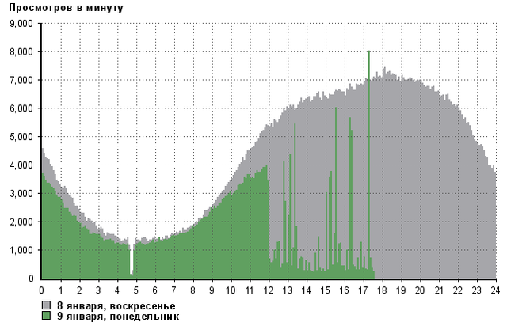
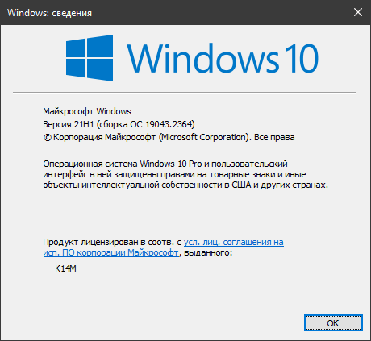

а) rutracker.org
б) Не пускает на сайта
в) Расширение браузера “Обход блокировок Рунета”
При попытке открыть сайт пишет
rutracker.org
Checking if the site connection is secure
rutracker.org needs to review the security of your connection before proceeding.
Ray ID: 7863e1f03f6e5049
Performance & security by Cloudflare
{kind=link}
И сколько бы не ждал, проверка не заканчивается…
Попробуйте по httpS: https://rutracker.org.
дай скрины winver, какая версия браузера?
Удалено
Ддосят жестко иногда.

Доступность сайта смотрите здесь rutracker.org: количество просмотров в минуту вчера и сегодня
Зеленый график не должен проседать.
Помимо захода по https для прохождения бесконечной Cloudflare капчи попробуйте стандартный современный браузер и другие средства обхода.
Это так важно?

{kind=link}
Гугл хром уже не современный? Какой же нужно использовать? Вот другие средства обхода почему то работают.
Не совсем к слову, заметил, что анонсеры Рутрекера перестали блокировать. Давно?
Почти лет 6 как.
Да прям. Еще пару месяцев назад было, торрент клиент только через прокси с ними соединялся. Хотя может не на каждом провайдере. Ростелеком.
Упс, я прочитал как «стали блокировать»; извиняюсь за невнимательность. Насчёт разблокировки не знаю, с начала блокировки как ходили аннонсеры через туннель, так и ходят 
Трекеры блокировались по IP, сейчас IP изменили.
Браузер Firefox. ОС Windows 10 22H2 (19045.3693)
Обход блокировок VPS(Helsinki) Vless+TCP+XTLS+Vision.
Не открывается только https://rutracker.org в любом браузере, кроме тора(в торе открывается)
Остальные заблокированные сайты открываются.
https://rutracker.org открывается в браузерах только с их включённым расширением для рутрекера.
Устанавливать какое-то лишнее расширение не вариант.
При обращении на сайт рутрекера появляется заглушка cloudflare " Web server is down"
Проблема загрузки форума и сайта rutracker.org повсеместная Недоступность Рутрекера в некоторых странах - обсуждение новости. (Кроме РФ !!!) [стр. 21] :: RuTracker.org
Причем у них тоже выскакивает такая же ошибка ( с генерацией страницы заглушки от CDN)
У меня почему-то открывается только в лисобраузерах, в хромобраузерах не хочет. И фирменное расширение не панацея.
Не открывает сайт подвисая на performing TLS Handshake to static.rutracker.cc…
Выдаваемый Cloudflare IP-адрес для static.rutracker.cc случайно попал на заблоченный диапазон.
Что-то рутрекер сегодня очень задумчивый. На fr vpn проблема коннекта парижского cloudflare с рутрекером (ошибка 522), на nl vpn открывается, но несколько секунд.
У меня тоже самое. Причем даже через ВПН (Польша) проблема сохраняется. Интересно, что через курл если смотреть (при использовании ВПН) - то вроде всё норм. А в браузере минуту надо ждать, прежде чем откроется. Без ВПН виснет и в курле. При этом через цензортрекер грузится без проблем.
Вы все врёти!
Открывается через три буквы менее чем за секунду.
@Ori У меня curl тоже думает.
Тоже медленно открывался, сейчас все востановилось.
Сегодня с утра и днём все api rutrackerа лагали, вне РФ в том числе.
У меня ничего не восстановилось, жуткий delay. Как будто через спутник из другой галактики соединяется.
Задержка фиксированная 20 секунд. Странно. Как будто какая-то защита.
У меня действительно публичный VPN.
Ping 20 секунд вот это круто.
сейчас тоже началось перед открытием задержка, через тор тоже, пингуется нормально и трасерт проходит